SolidWorks Robotic Arm
Designing motion through geometry, actuation, and structural constraints.
Role: CAD engineer · Mechanical designer
Mechanical Design
Engineering the Mechanism
A robotic arm's movement heavily affected by its design even before its motor begins to turn. Every joint, support, and mechanical connection determines how forces are transferred and how the system can move.
This project explored those relationships through the design of a motor-driven robotic arm mechanism in SolidWorks. Ideally, my team and I were supposed to design a robotic arm that could potentially be further developed(fabricated) and integrated into an Engineering lab at NYUAD. My work involved component design, assembly simulation, and engineering documentation, with an emphasis on how individual parts contribute to the behavior of the complete system.
The assembly incorporated an SPG30E-270 DC motor, bearings, structural supports, and two limit switches intended to define the arm's range of movement. Each component introduced a different design constraint, from mounting geometry and mechanical alignment to the boundaries of rotation.
Using SolidWorks, we were able to design components, perform motion analysis, perform simulations on the assembly, and optimize parts of the assembly, all geared towardss examining how the differnt components could function together as a single mechanism.
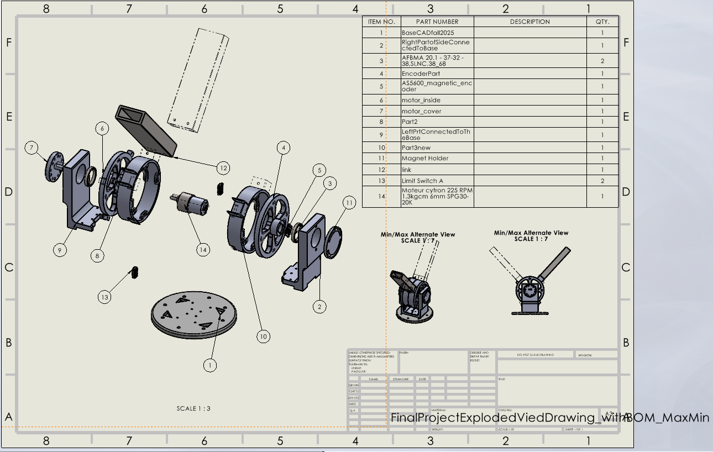
Exploded assembly with BOM and min/max alternate views
Component Drawings
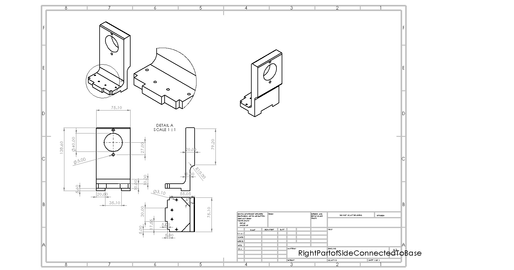
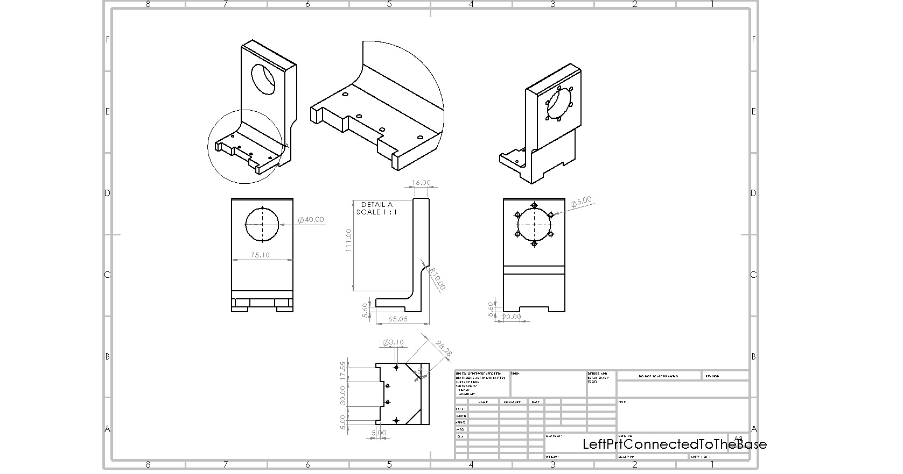
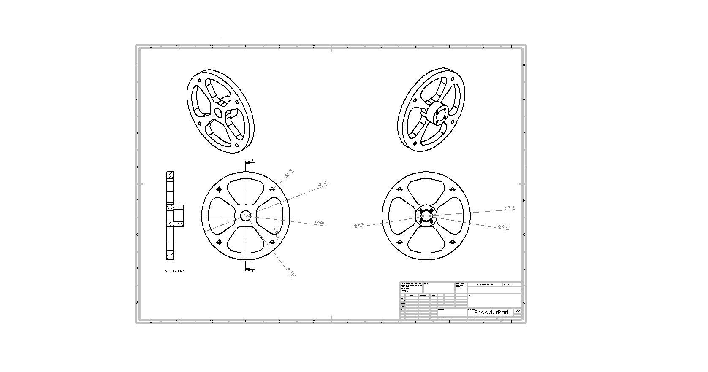
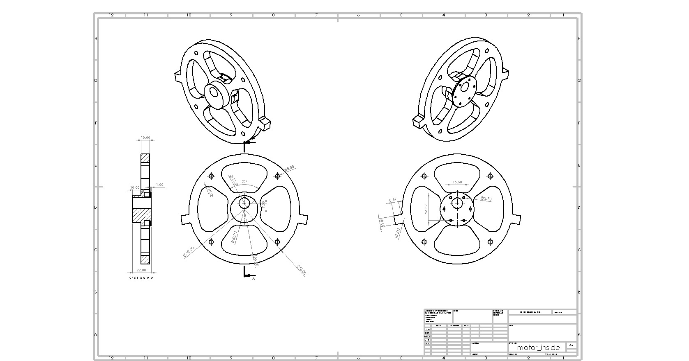
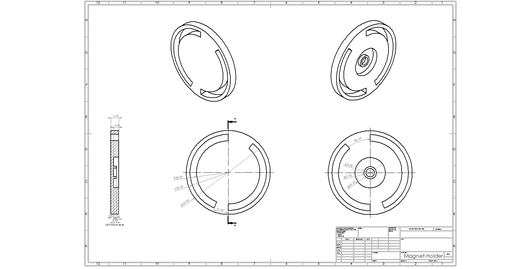
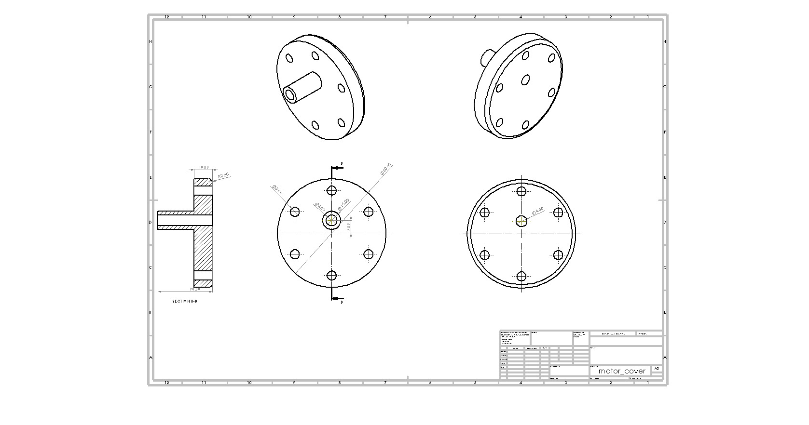
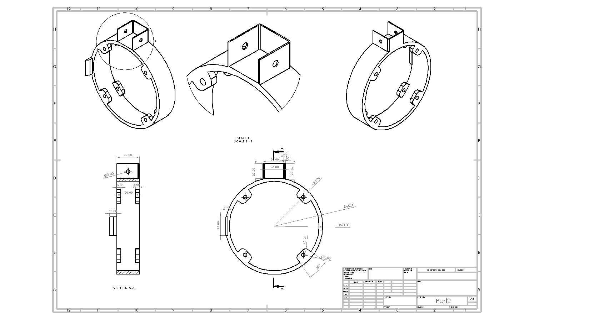
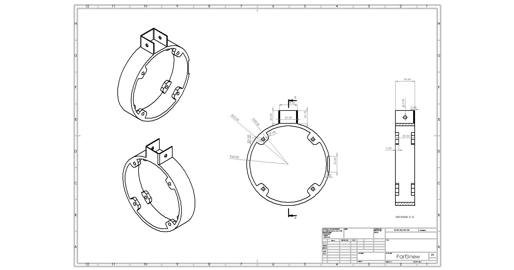
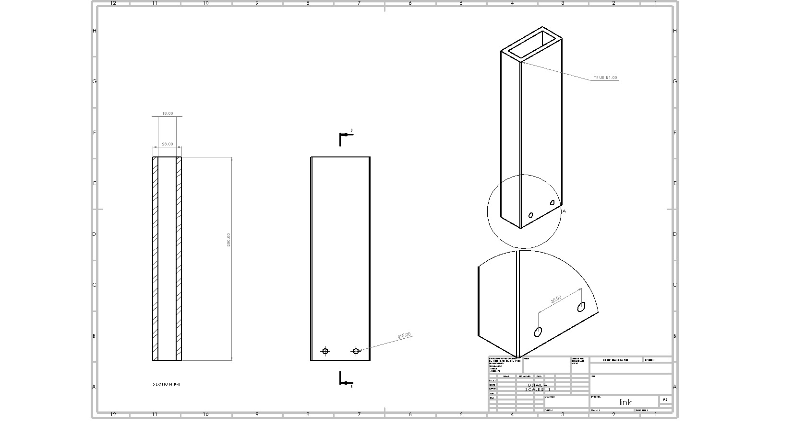
01 / 09
Right base support
Assembly & Motion Simulation
Movement Within Limits
Designing the components was only part of the challenge. We also needed to understand how the assembled mechanism would behave when set in motion.
Using SolidWorks motion studies, we examined the arm's movement across different configurations. Alternative-position views helped us visualize its range of rotation, while the integration of limit switches established intended boundaries for its operation.
The exploded assembly and technical drawings offered another perspective. They made it possible to examine the relationship between individual components, their mounting positions, and their contribution to the mechanism's overall construction.
The process highlighted a fundamental consideration in mechanical design: movement depends not only on actuation, but on the geometry and constraints of everything surrounding it.
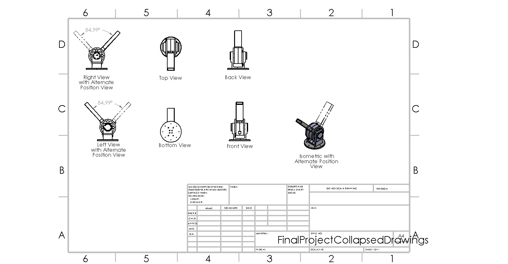
01 / 04
Exploded-view animation
Structural Analysis & Topology Optimization
Less Material, Same Design Objective
How much material does a mechanical component actually need?
We explored this question through topology optimization of the arm's 20 cm structural link. The original component had a modeled mass of 1,196.34 grams. Our objective was to reduce its weight while accounting for the loading and mounting constraints defined in the simulation.
Using 1020 alloy steel as the specified material, we applied loads of 5 N and 3 N and constrained the component at its mounting holes. SolidWorks then evaluated the distribution of material within the design space.
The resulting topology study suggested a substantially lighter structure, reducing the modeled mass to approximately 521 grams.
A 56.5% reduction in mass.
What interested me was the shift in how the component was designed. Rather than treating its original geometry as fixed, optimization allowed us to investigate where material was most useful under the specified conditions, and where it might be removed.
The outcome was a computational proposal for a lighter component, providing a foundation for further refinement and structural validation.
Topology Optimization · 20 cm Arm Link
The comparison is based on SolidWorks model results, not a measured physical prototype.
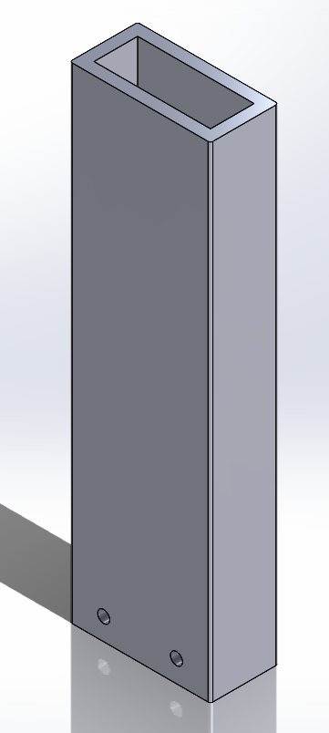
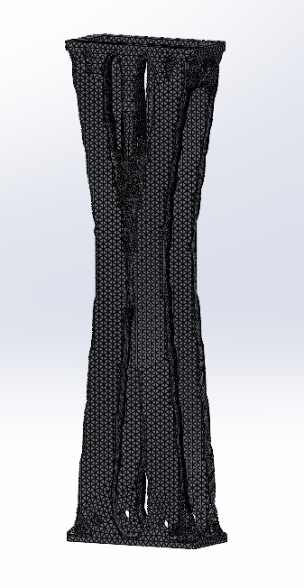
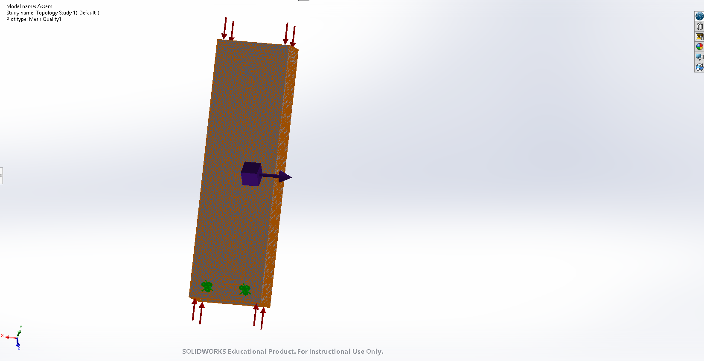
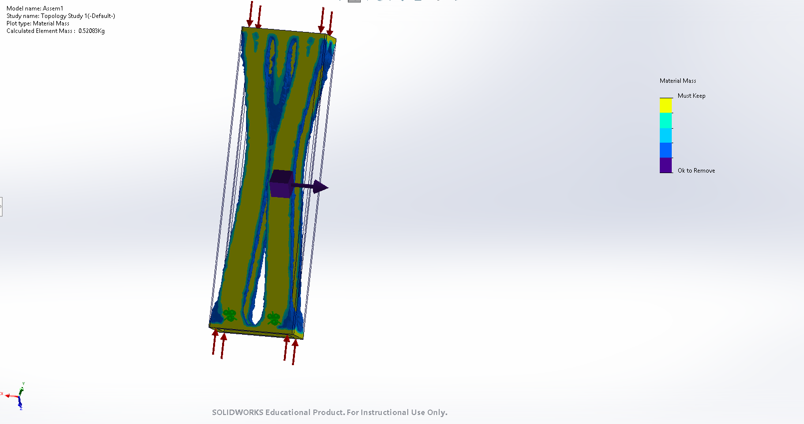
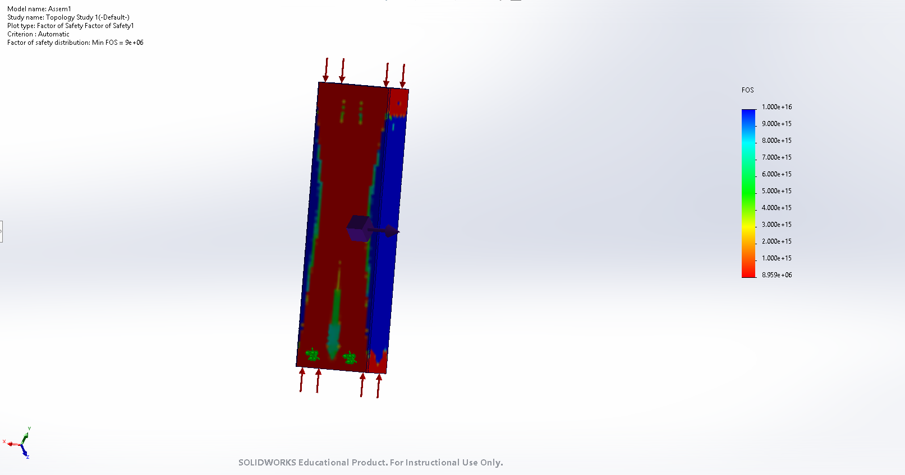
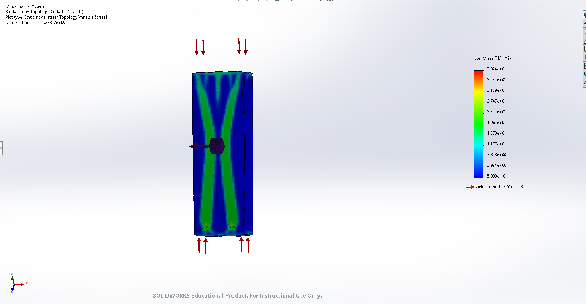
Conclusion
Intelligence in the Mechanics
This project changed how I approached the relationship between mechanical design and system behavior.
The motor provided actuation, but movement depended on far more than the motor itself. Every connection imposed a constraint. The limit switches introduced intended operational boundaries. Structural analysis raised questions about the material necessary to support the mechanism.
I became particularly interested in how these decisions influence one another. Altering the geometry of a single component can affect its weight, mechanical properties, and relationship to the wider assembly.
The project strengthened my understanding of mechanical design as an essential part of developing responsive physical systems. It is a perspective I want to carry into future work, where computation, actuation, and carefully designed structures come together to produce meaningful physical interaction.